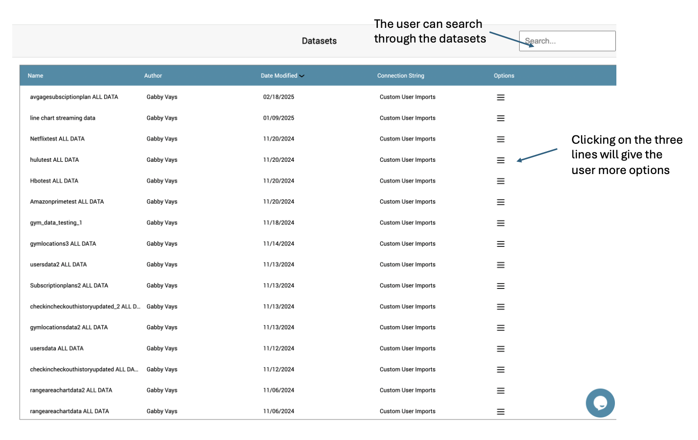
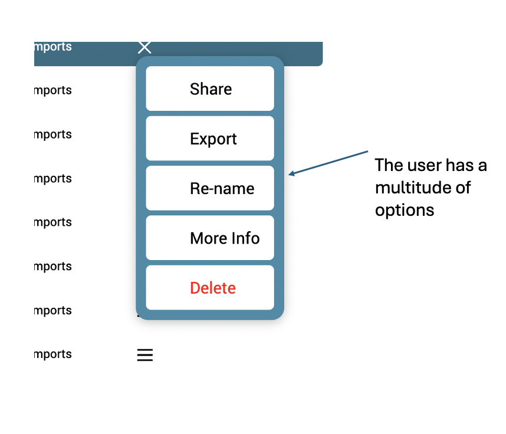
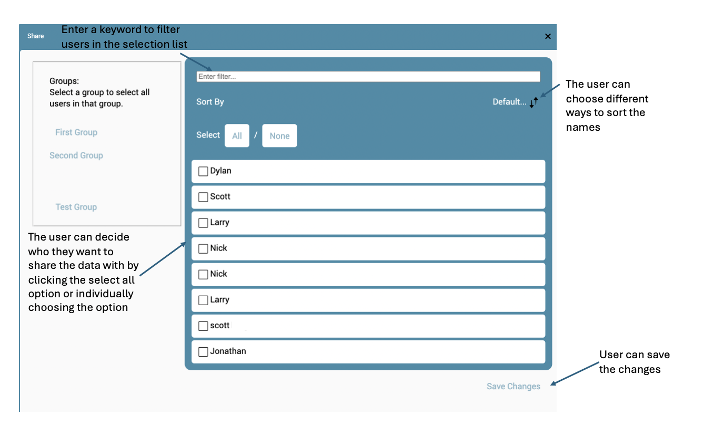
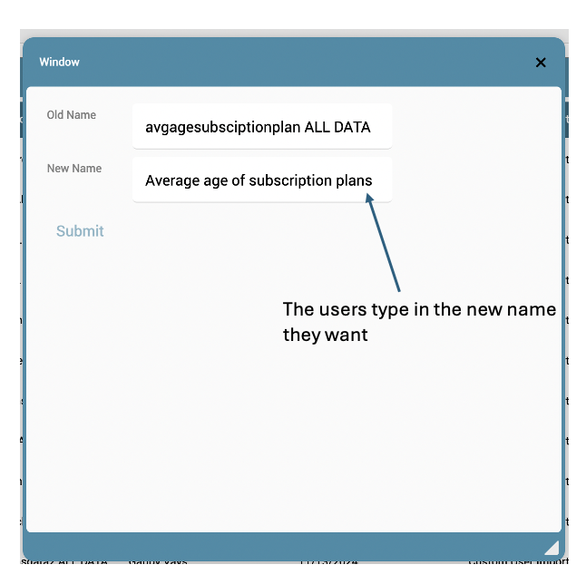
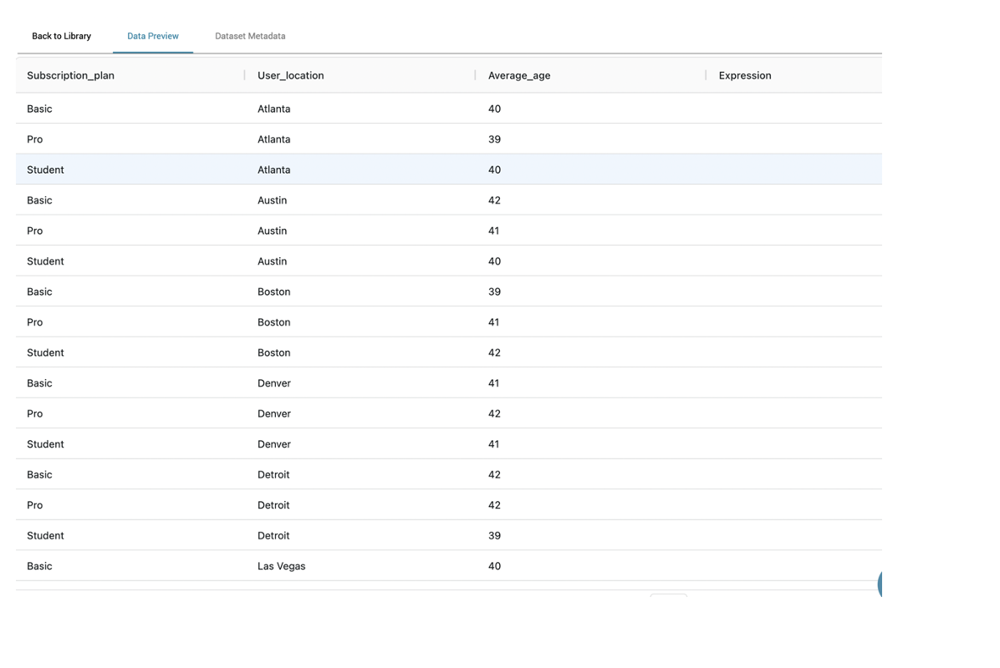
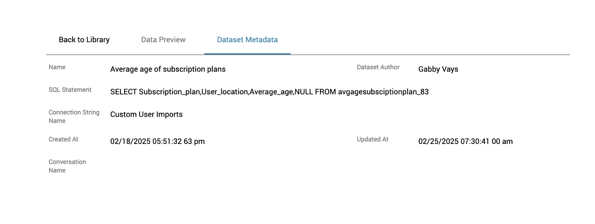
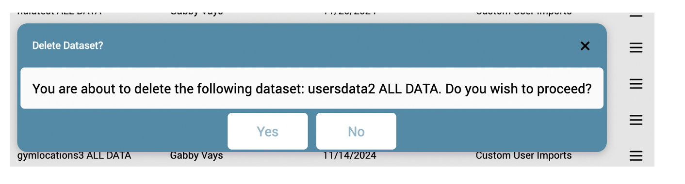

Datasets Overview
The Datasets Page is the central hub for managing imported datasets in Evolytix. Users can search, manage, share, export, and delete datasets while keeping track of metadata.
1. Main Datasets View & Searching
The **Datasets Page** displays all available datasets, allowing users to view key details such as dataset name, author, modification date, and connection string. A **search bar** is provided at the top to dynamically filter through datasets, making it easier to locate specific entries.
2. Dataset Options Menu
Clicking the **three-line menu** beside a dataset provides multiple options, including:
- Share - Grant access to other users.
- Export - Download the dataset in a structured format.
- Rename - Modify the dataset name.
- More Info - View dataset metadata.
- Delete - Remove the dataset permanently.
3. Sharing Datasets
Users can **select recipients** to share datasets with, apply filters, and manage access permissions for collaboration.
4. Exporting a Dataset

Exporting allows users to download the dataset in different formats such as **CSV, JSON, or SQL**, enabling offline analysis or integration with other platforms.
5. Renaming a Dataset
Users can rename datasets to enhance organization. The system prevents duplicate names and ensures clarity in dataset identification.
6. Viewing Dataset Metadata
Clicking **More Info** displays additional dataset details, including its structure, query, and author metadata.
Metadata includes:
- SQL query used for dataset creation
- Author and timestamp information
- Connection string used for data import
7. Deleting a Dataset
If a dataset is no longer needed, users can delete it permanently. A confirmation prompt ensures no accidental deletions occur.